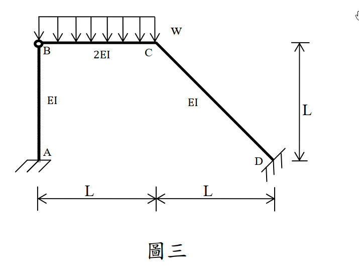

考題編號：SA-2013-3
主分類： SA-U2-3 靜不定結構之傾角變位法
副分類： 無
分析法： 傾角變位法 (Slope-Deflection Method) 與 虛功原理 (Principle of Virtual Work)
標籤： 傾角變位法 側移剛架 斜桿 半剛接 符號慣例
1. 原始題目重述 (Problem Restatement)
所示剛架結構 A、D 為固接支承，B 點為鉸接。桿件 BC 承受垂直均佈載重 $w$，如圖三所示。各桿件之 $E$ 均相同。桿件 AB、CD 面積慣性矩為 $I$，桿件 BC 則為 $2I$。請以傾角變位法分析各桿件端點彎矩，並繪桿件 BC 剪力圖與彎矩圖。使用其他方法不予給分。（25 分）

圖說：A 為左下角固接支承，AB 桿為垂直桿（長度 L，慣性矩 I）。B 點為鉸接 (Hinge)。BC 桿為水平桿（長度 L，慣性矩 2I），承受向下均佈載重 $w$。C 點為剛接節點。CD 桿為斜桿（水平跨距 L，垂直落差 L，長度 $\sqrt{2}L$，慣性矩 I），D 為右下角固接支承。
2. 考題核心精神與出題者意圖 (Core Concepts & Examiner's Intent)
本題是傾角變位法極具挑戰性的綜合題型，主考四大核心：
- 統一符號慣例的定力：傾角變位法的靈魂在於「端彎矩 $M$、節點轉角 $\theta$、弦位角 $\psi$」必須使用完全一致的正負號慣例（本解法統一採順時針為正）。一旦混用，在斜桿的側移關係中必定全盤皆輸。
- 斜桿側移幾何分析：剛架發生側移時，斜桿 CD 的弦位角 $\psi_{CD}$ 必須從 C 點的水平與垂直位移向量中推導，測驗考生對微小位移幾何的理解。
- 半剛接（一端鉸接）修正公式：B 點為鉸接，代表 $M_{BA} = M_{BC} = 0$。熟練的考生會直接套用修正勁度（$3EI/L$）與修正固端彎矩，減少未知數 $\theta_B$。
- 斜桿剛架的層剪力方程式：傳統垂直柱的 $\sum F_x = 0$ 在含斜桿的剛架中極易寫錯。出題者意圖測驗考生是否懂得使用虛功原理 (Virtual Work) 來建立絕對正確的側移方程式。
3. 解題戰略地圖與陷阱分析 (Strategic Roadmap & Trap Analysis)
解題策略：
- 側移幾何分析：忽略軸向變形，B 點只能水平移動（設向右位移為 $u$）。因 BC 軸向剛硬，C 點亦向右移動 $u$。又 CD 桿軸向剛硬，由幾何協調可推得 C 點必須同時向上移動 $u$。
- 定義弦位角 $\psi$：統一以順時針為正。推導 $\psi_{AB}$、$\psi_{BC}$、$\psi_{CD}$ 與 $u$ 的關係式。令 $R = u/L$。
- 傾角變位方程式：寫出 $M_{AB}, M_{CB}, M_{CD}, M_{DC}$。代入 B 端鉸接的修正勁度與修正固端彎矩 (FEM)。
- 建立平衡方程式：
- 節點 C 力矩平衡：$\sum M_C = M_{CB} + M_{CD} = 0$
- 側移方程式（虛功法）：給予系統一向右的虛擬側移 $\delta u$，計算內力虛功與外力虛功相等，求得力矩間的關係式。
- 解聯立方程式：解出 $\theta_C$ 與 $R$，再代回求各端彎矩。
- 繪製 BC 桿 V、M 圖：取 BC 自由體，利用靜力平衡求出 $V_B, V_C$，找出剪力為零的位置求最大正彎矩。
陷阱分析：
- 致命陷阱一：BC 桿固端彎矩符號。均佈載重向下，為使其兩端不轉動，B 端需施加逆時針力矩，C 端需施加順時針力矩。若統一採順時針為正，則 $FEM_{BC} = -wL^2/12$，$FEM_{CB} = +wL^2/12$。極多考生在此處弄錯正負號。
- 致命陷阱二：斜桿弦位角判斷。C 點向右又向上移動，CD 桿的弦位角究竟是順時針還是逆時針？必須利用相對位移向量與原桿件向量進行外積或幾何作圖確認。本題 $\psi_{CD}$ 為順時針。
- 致命陷阱三：虛功法中外力的虛功。C 點有向上的虛擬位移，導致 BC 桿產生向上的剛體位移，而均佈載重向下，因此外力作功為負值！
3.5 變數層次分析 (Variable Hierarchy Analysis)
最終目標
求各端彎矩 M_AB, M_CB, M_CD, M_DC 並繪製 BC 桿 V, M 圖。
本題關鍵公式與聯立方程式
$\boxed{\cdot}$ = 需由前步驟推導，非題目直接給定的變數
$$\text{節點 C 平衡: } M_{CB}(\boxed{\theta_C}, \boxed{R}) + M_{CD}(\boxed{\theta_C}, \boxed{R}) = 0$$
$$\text{虛功方程式: } M_{AB} - M_{CB} + M_{CD} + M_{DC} = -0.5 wL^2$$
L1：題目直接給定
| 符號 | 數值 | 說明 |
|---|---|---|
| $K_{AB}, K_{BC}, K_{CD}$ | $EI/L, 2EI/L, EI/\sqrt{2}L$ | 各桿件勁度 |
| $FEM_{BC}, FEM_{CB}$ | $-wL^2/12, +wL^2/12$ | BC 桿原始固端彎矩 (順時針為正) |
L2：需知識點推導
| 變數 | 數值 | 說明 |
|---|---|---|
| $\Delta_C$ 位移 | $(u, u)$ | C點向右移 $u$，向上移 $u$ |
| $\psi_{AB}, \psi_{BC}, \psi_{CD}$ | $R, -R, R$ | 弦位角 (順時針為正)，$R=u/L$ |
| $FEM_{CB}^{mod}$ | $+wL^2/8$ | B 端鉸接修正後之 C 端固端彎矩 |
4. 步驟化詳細計算過程 (Step-by-Step Detailed Calculation)
Step 1：側移幾何與弦位角分析 (全程遵守順時針為正)
設 B 點向右側移 $u$。因忽略軸向變形：
- $v_B = 0$ (AB不伸長)。
- $u_C = u_B = u$ (BC不伸長)。
- CD桿：$\Delta L_{CD} = u_C \cos(-45^\circ) + v_C \sin(-45^\circ) = 0 \Rightarrow u(\frac{1}{\sqrt{2}}) - v_C(\frac{1}{\sqrt{2}}) = 0 \Rightarrow v_C = u$ (C點向上移 $u$)。
定義弦位角 $\psi = \frac{\text{相對橫向位移}}{\text{桿長}}$ (順時針為正)，令 $R = \frac{u}{L}$：
- AB 桿：B 向右移 $u$，桿件順時針轉，$\psi_{AB} = +\frac{u}{L} = +R$。
- BC 桿：C 相對於 B 向上移 $u$，桿件逆時針轉，$\psi_{BC} = -\frac{u}{L} = -R$。
- CD 桿：C 向右且向上移 $(u,u)$，D 不動。相對於 C，D 往左且往下移 $(-u,-u)$。此位移向量使原指向右下的 CD 桿產生更陡的斜率，即順時針旋轉。嚴格計算 $\psi_{CD} = +\frac{u}{L} = +R$。
Step 2：傾角變位方程式建立
-
AB 桿 (A 固接，B 鉸接)：$M_{BA} = 0$
$$M_{AB} = \frac{3EI_{AB}}{L_{AB}} (\theta_A - \psi_{AB}) = \frac{3EI}{L} (0 - R) = -3 \frac{EI}{L} R$$ -
BC 桿 (B 鉸接，C 剛接)：$M_{BC} = 0$
修正固端彎矩：$FEM_{CB}^{mod} = FEM_{CB} - 0.5 FEM_{BC} = (+wL^2/12) - 0.5(-wL^2/12) = +wL^2/8$
$$M_{CB} = \frac{3EI_{BC}}{L_{BC}} (\theta_C - \psi_{BC}) + FEM_{CB}^{mod} = \frac{6EI}{L} (\theta_C - (-R)) + \frac{wL^2}{8} = \frac{6EI}{L} (\theta_C + R) + \frac{wL^2}{8}$$ -
CD 桿 (C 剛接，D 固接)：
$$M_{CD} = \frac{2EI_{CD}}{L_{CD}} (2\theta_C + \theta_D - 3\psi_{CD}) = \frac{2EI}{\sqrt{2}L} (2\theta_C + 0 - 3R) = \frac{\sqrt{2}EI}{L} (2\theta_C - 3R)$$
$$M_{DC} = \frac{\sqrt{2}EI}{L} (\theta_C - 3R)$$
Step 3：聯立方程式與求解
條件一：C 點力矩平衡
$$M_{CB} + M_{CD} = 0$$
$$\frac{6EI}{L} (\theta_C + R) + \frac{wL^2}{8} + \frac{\sqrt{2}EI}{L} (2\theta_C - 3R) = 0$$
$$(6 + 2\sqrt{2}) \frac{EI}{L} \theta_C + (6 - 3\sqrt{2}) \frac{EI}{L} R = -0.125 wL^2 \quad \text{--- (Eq 1)}$$
條件二：側移虛功方程式
給予系統向右虛擬側移 $\delta u$。各桿虛擬弦位角為 $\delta\psi_{AB} = \frac{\delta u}{L}$, $\delta\psi_{BC} = -\frac{\delta u}{L}$, $\delta\psi_{CD} = \frac{\delta u}{L}$。
內虛功 $\delta W_{int} = M_{AB} \delta\psi_{AB} + M_{CB} \delta\psi_{BC} + (M_{CD} + M_{DC}) \delta\psi_{CD}$
外虛功 $\delta W_{ext}$：載重 $w$ 向下，BC 桿作剛體向上虛擬位移，其形心位移為 $\frac{\delta u}{2}$ 向上。
$\delta W_{ext} = -(wL) \cdot (\frac{\delta u}{2}) = -0.5 wL^2 \delta u$ (作負功！)
令 $\delta W_{int} = \delta W_{ext}$ 並同除以 $\frac{\delta u}{L}$：
$$M_{AB} - M_{CB} + M_{CD} + M_{DC} = -0.5 wL^2 \quad \text{--- (Eq 2)}$$
將方程式代入 (Eq 2) 整理後得：
$$(6 - 3\sqrt{2}) \frac{EI}{L} \theta_C + (9 + 6\sqrt{2}) \frac{EI}{L} R = 0.375 wL^2 \quad \text{--- (Eq 2')}$$
解聯立 (Eq 1) & (Eq 2')
克拉瑪法則精確解得：
$$\theta_C = \frac{34 - 19\sqrt{2}}{992} \frac{wL^3}{EI} \approx 0.007187 \frac{wL^3}{EI}$$
$$R = \frac{21 + 22\sqrt{2}}{1488} \frac{wL^3}{EI} \approx 0.03502 \frac{wL^3}{EI}$$
Step 4：計算各端彎矩
將 $\theta_C, R$ 代回傾角變位方程式：
$$M_{AB} = \frac{3 - 174\sqrt{2}}{3472} wL^2 \approx -0.0699 wL^2$$
$$M_{CB} = \frac{626 - 69\sqrt{2}}{3472} wL^2 \approx 0.1522 wL^2$$
$$M_{CD} = \frac{69\sqrt{2} - 626}{3472} wL^2 \approx -0.1522 wL^2$$
$$M_{DC} = \frac{36\sqrt{2} - 487}{3472} wL^2 \approx -0.1256 wL^2$$
(註：正值代表順時針，負值代表逆時針)
Step 5：繪製 BC 桿剪力圖 (V) 與彎矩圖 (M)
取 BC 桿自由體 (B、C 間距 L)，$M_{BC} = 0$，$M_{CB} = 0.1522 wL^2$ (順時針)。
由 $\sum M_C = 0$ 求 B 端剪力：
$$V_B \cdot L - wL \left(\frac{L}{2}\right) + M_{CB} = 0 \Rightarrow V_B = \frac{wL}{2} - \frac{M_{CB}}{L} = \frac{1110 + 69\sqrt{2}}{3472} wL \approx 0.3478 wL \text{ (向上)}$$
由 $\sum F_y = 0$ 求 C 端剪力：
$$V_C = wL - V_B = \frac{2362 - 69\sqrt{2}}{3472} wL \approx 0.6522 wL \text{ (向上)}$$
剪力圖 (V-Diagram)：
- 自 B 點的 $+0.3478 wL$ 開始，呈直線下降。
- 至 C 點降為 $-0.6522 wL$。
- 剪力為零的位置發生在 $x_0 = \frac{V_B}{w} \approx 0.3478 L$ 處。
彎矩圖 (M-Diagram)：
- 拋物線分佈。B 點彎矩為 $0$。
- 最大正彎矩發生在 $x_0$ 處：$M_{max} = \frac{V_B^2}{2w} = \frac{13947 + 2158\sqrt{2}}{246016} wL^2 \approx 0.0605 wL^2$ (下側受拉)。
- C 點彎矩為負彎矩（上側受拉）：$M(L) = -M_{CB} \approx -0.1522 wL^2$。
5. 關鍵爭議點與進階探討 (Critical Issues & Advanced Discussion)
- 符號慣例的一致性：如果考生平時習慣「下側受拉為正彎矩，逆時針轉角為正」，遇到斜桿會非常容易混亂。傾角變位法最強的武器就是強制的順時針為正，所有項次都不必去想受拉側，純粹代數運算，最後再將負號轉譯為逆時針，這樣能將出錯率降到最低。
- 斜桿側移虛功法的無敵之處：許多參考書會教用幾何投影將桿件剪力投影到水平方向 $\sum F_x = 0$。這種作法在有載重且多斜桿的狀況下極易漏算載重的側向投影分量。採用虛功原理，只要位移場正確（C 點右上移），載重作功的符號就不會錯（載重向下、位移向上 $\rightarrow$ 負功），是解斜桿剛架的防呆神器。